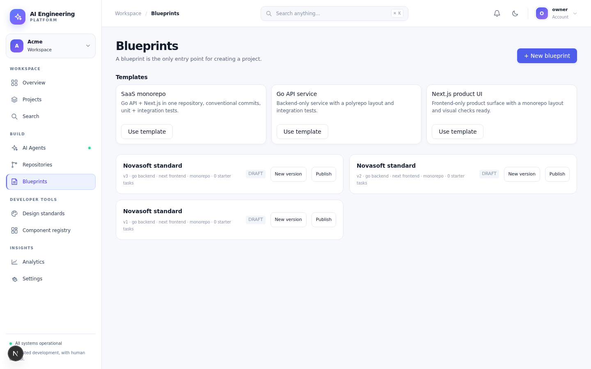

Projects and blueprints
A blueprint is the only entry point for creating a project. It captures the decisions that should not be reinvented for every repository.
What a blueprint contains
- stack and repository layout
- test strategy and required checks
- design standards and component registry references
- default agents and allowed models
- starter tasks and acceptance templates
- project rules and approval requirements

Published templates and versioned project blueprints.
Create a blueprint version
- Open Blueprints.
- Choose a template or + New blueprint.
- Edit the definition: stack, test strategy, agents, rules.
- Save a version. Versions are immutable.
- Review the diff and Publish.
A published version can be instantiated by projects. Draft versions are visible only to the team.
Create a project
- Open Projects → New project.
- Name the project and select the blueprint version.
- Connect the Git repository:
- install the GitHub App for the repository, or
- connect a GitLab project, or
- use a token for a local repository.
- Choose the default branch and the agent/model allowed for the project.
- Create the project.
The project inherits the blueprint's test strategy, rules and starter tasks. You can override values per project, but the blueprint version used at creation is recorded.
Repositories
The Repositories view shows the connected repositories and their status. A repository must be reachable by the worker before a run can clone it.
For GitHub, the App installation grants access to selected repositories. For GitLab, the connection is scoped to a project. Tokens are stored encrypted and never returned by the API.
Project settings
| Setting | Effect |
|---|---|
| Required checks | Checks that must be green before a PR can merge |
| E2E command | Command run after unit tests in the sandbox |
| Required approvals | Number of distinct approvers for a PR |
| Merge window | Time window in which the merge queue may land changes |
| MCP servers | Trusted tool servers available to runs |
| Agents and models | Providers and agent plugins allowed in the project |
Permissions
- Owner/Admin can create, edit and archive projects and blueprints.
- Member can work with tasks and runs in projects they can access.
- Viewer can read the board, runs and results.
Limits and good practice
- Keep a blueprint small enough to review; put product-specific detail in tasks.
- Publish a new version instead of editing a published one.
- Connect only the repositories the project needs.
- Use project-level rules when a client or repository needs stricter controls.